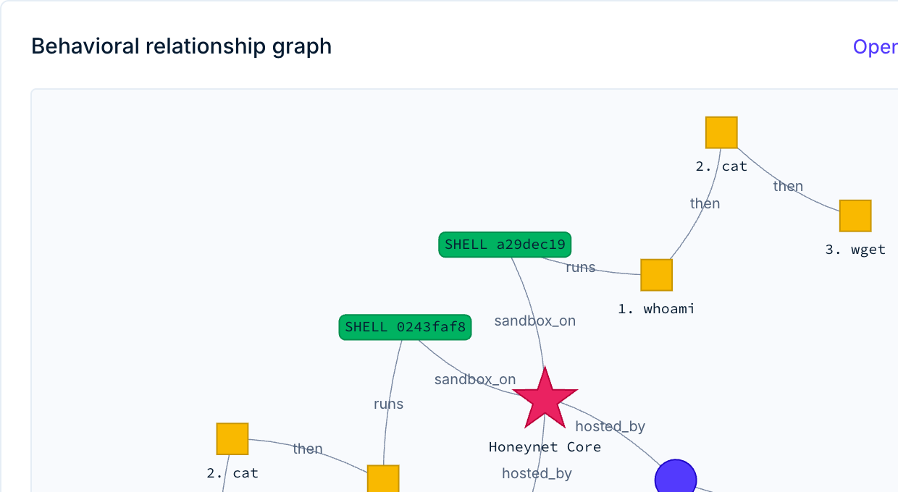

Cybersecurity research labs
Run controlled experiments against real malware families. Spin up isolated analysis machines, run samples through the malware pipeline, and capture full attacker techniques through honeypot interaction.
- On-demand analysis machines
- Full session timeline reconstruction
- Automatic malware sample collection
- APK and binary static analysis, dynamic with CAPE
